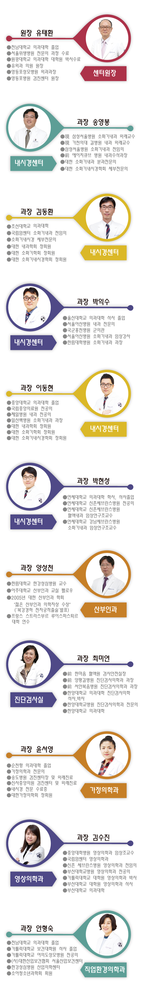

<? include "p_head.html";?>

<h2>검진센터 소개</h2>
	<nav>
		<ul class="menu_list_sub clearfix">
			<li><a href="page01.html" class="active">의료진소개</a></li>
			<li><a href="page02.html">둘러보기</a></li>
			<li><a href="page03.html">오시는길</a></li>
		</ul>
	</nav>
	
	<section>
		
	</section>

<? include "p_footer.html";?>	